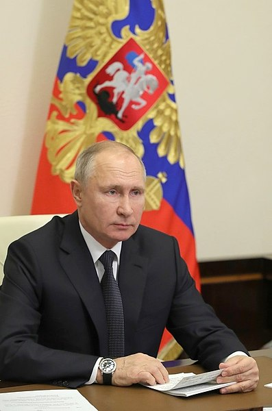

Россійская имперія
Россійская имперія

 ЛНР
ЛНР  Беларусь
Беларусь  Страны
Страны  Украина
Украина  ДНР
ДНР  Символы
Символы Президент Российской Федерации
Президент Российской Федерации — высшая государственная должность Российской Федерации, а также лицо, избранное на эту должность.

Президент Российской Федерации является главой государства. Многие полномочия президента либо имеют непосредственно исполнительный характер, либо приближены к исполнительной власти. Наряду с этим, по мнению некоторых исследователей, президент не относится к какой-либо одной ветви власти, а возвышается над ними, поскольку осуществляет координирующие функции и имеет право роспуска Государственной думы
Президент Российской Федерации является также гарантом Конституции Российской Федерации, прав и свобод человека и гражданина и верховным главнокомандующим Вооружёнными силами Российской Федерации.
В соответствии с Конституцией Российской Федерации и федеральными законами президент Российской Федерации определяет основные направления внутренней и внешней политики.
С 7 мая 2012 года президентом Российской Федерации является Владимир Владимирович Путин.
 Владимир Путин
с 7 мая 2012 года
| Должность | |
|---|---|
| Возглавляет: | Российскую Федерацию |
| Форма обращения: | Господин президент |
| Резиденция: | Сенатский дворец, Москва (Россия) |
| Назначается: | по результатам прямых выборов |
| Срок полномочий: | не более 2 сроков по 6 лет |
| Зарплата: |
773,4 тыс. руб./мес (октябрь 2019 г.) |
| Предшествующая: | Председатель Верховного Совета РСФСР |
| Появилась | 24 апреля 1991 года |
| Первый | Борис Ельцин |
| Сайт | kremlin.ru |
Срок полномочий
Президент РСФСР, избранный в соответствии с Конституцией РСФСР 1978 года на 5 лет, осуществлял свои полномочия в 1991—1993 годах.
С принятием Конституции РФ 1993 года срок полномочий был сокращён до 4 лет, что практиковалось в 1993—2008 годах.
Срок 6 лет, установленный в 2008 году, стал применяеться в отношении президентов, избранных после принятия соответствующих поправок (то есть начиная с выборов 2012 года).
Президент имел право исполнять должность не более двух сроков подряд в 1991—2020 годах; с 2020 года — не более двух сроков.
Прававой статус
Президент Российской Федерации — единственная должность, на которую избирается один из кандидатов общим голосованием граждан Российской Федерации.
Правовой статус президента Российской Федерации закреплён в статьях 11, 78, 80-93, 107-109, 111-117, 125, 128, 134 Конституции Российской Федерации.
Наряду с полномочиями главы государства президент Российской Федерации имеет право председательствовать на заседаниях Правительства Российской Федерации. Президент Российской Федерации может давать поручения правительству, он также осуществляет руководство отдельными федеральными органами исполнительной власти.
В отличие от конституции Пятой французской республики, где политику государства определяет и проводит правительство, а президент почти всегда председательствует на его заседаниях, президент Российской Федерации самостоятельно и в полной ответственности «определяет основные направления внутренней и внешней политики государства» (статья 80 Конституции Российской Федерации) и «руководит внешней политикой» (статья 86 Конституции Российской Федерации). Правительство же «осуществляет исполнительную власть» (статья 110 Конституции РФ), то есть, определяет оперативные направления внутренней политики и проводит политику, определённую президентом в его указах.
Указы и распоряжения президента, как и постановления и распоряжения правительства, обязательны для исполнения в Российской Федерации и являются подзаконными актами. Однако президент может отменять постановления и распоряжения Правительства Российской Федерации.
Формально, правительство — «коллективный» глава исполнительной власти. Однако, определяя своими указами направления деятельности правительства, других органов исполнительной власти, президент является «фактическим» главой исполнительной власти (это не управление текущей работой, которая характеризуется как аппаратно-управленческая деятельность).
Ввиду такой двухступенчатости исполнительной власти термин «глава исполнительной власти» в Конституции Российской Федерации (как и Франции) отсутствует (председатель правительства не является таковым, так как властными полномочиями обладают президент и правительство):
"На основании и во исполнение Конституции Российской Федерации, законов, нормативных указов президента Правительство Российской Федерации издаёт постановления и распоряжения, обеспечивает их исполнение. Если акты правительства противоречат Конституции, федеральным законам Российской Федерации или указам президента, то они могут быть отменены президентом. " (статья 115 Конституции РФ). Но согласно статье 90 указы президента не могут противоречить федеральным законам, которые в свою очередь, согласно 109 статье, после отклонения президентом, при вторичном рассмотрении Государственной Думой и Советом Федерации и повторном принятии его более двумя третями голосов, подлежит подписанию им в течение 1 недели.
«Председатель правительства Российской Федерации в соответствии с Конституцией Российской Федерации, федеральными законами и указами президента Российской Федерации определяет основные направления деятельности правительства Российской Федерации и организует его работу» (статья 113 Конституции РФ).
«Президент Российской Федерации может принять решение об отставке правительства Российской Федерации» (статья 117 Конституции РФ).
Таким образом, выборы президента Российской Федерации с его программой можно назвать «выборами исполнительной власти» федерального уровня.
По отношению к законодательной власти президент, как и правительство, имеет право законодательной инициативы. Однако правительство вносит в Думу законопроекты, касающиеся его компетенции (в основном бюджет), а президент вносит законопроекты, касающиеся всех сторон общественной жизни. Он обращается к Федеральному собранию с ежегодными посланиями о положении в стране, об основных направлениях политики государства (статья 84 Конституции РФ), в том числе и законодательной политики (рекомендует принятие определённых законов).
Президент РФ представляет Совету Федерации кандидатуры для назначения судей Конституционного и Верховного судов, а также кандидатуру Генерального прокурора, вносит предложение о его освобождении, назначает судей других федеральных судов, назначает и освобождает высшее командование Вооружённых сил, назначает и отзывает послов РФ, принимает верительные и отзывные грамоты иностранных послов.
Президент Российской Федерации обладает неприкосновенностью (статья 91 Конституции РФ), отличной от понятия «личная неприкосновенность», предусмотренной для всех граждан Российской Федерации статьёй 22 Конституции, но не конкретизируемой законодательством Российской Федерации. Считается, что неприкосновенность означает невозможность привлечения президента к уголовной или административной ответственности или применения к нему каких-либо принудительных мер (допрос и т. п.).
Статья 93 Конституции устанавливает порядок отрешения президента от должности «на основании выдвинутого Государственной думой обвинения в государственной измене или совершении иного особо тяжкого преступления <…>», который предусматривает участие двух ветвей государственной власти: законодательной и судебной.
Согласно статье 7 Федерального закона «О государственной охране», в отличие от прочих лиц, замещающих государственные должности, которым предоставляется государственная охрана, «президент Российской Федерации в течение срока своих полномочий не вправе отказаться от государственной охраны». Государственной охране также подлежат члены семьи президента, а после окончания срока полномочий президента государственная охрана предоставляется ему пожизненно.
Порядок вступления в должность
Первый президент России был избран в 1991 году сроком на 5 лет. В Конституции РФ 1993 года срок полномочий президента был сокращён до 4 лет. Однако согласно п.3 Заключительных и переходных положений Конституции президент Ельцин осуществлял полномочия полный срок, на который он был избран (то есть до 1996 года). В соответствии с изменением Конституции, вступившим в силу 31 декабря 2008 года, начиная с выборов 2012 года, президент Российской Федерации избирается на шестилетний срок.
При вступлении в должность президент Российской Федерации приносит народу следующую присягу (статья 82 Конституции РФ):
«Клянусь при осуществлении полномочий Президента Российской Федерации уважать и охранять права и свободы человека и гражданина, соблюдать и защищать Конституцию Российской Федерации, защищать суверенитет и независимость, безопасность и целостность государства, верно служить народу».
Присяга приносится в торжественной обстановке в присутствии членов Совета Федерации, депутатов Государственной думы и судей Конституционного суда Российской Федерации.
Полномочия президента Российской Федерации
На основании четвёртой главы Конституции Российской Федерации президент России осуществляет следующие полномочия:
- вносит на утверждение в Государственную думу кандидатуру председателя Правительства Российской Федерации, назначает утверждённого Государственной думой председателя Правительства, освобождает председателя Правительства Российской Федерации от должности;
- осуществляет общее руководство Правительством Российской Федерации, имеет право председательствовать на его заседаниях;
- утверждает по предложению председателя Правительства Российской Федерации структуру федеральных органов исполнительной власти, вносит в нее изменения; в структуре федеральных органов исполнительной власти определяет органы, руководство деятельностью которых осуществляет президент Российской Федерации, и органы, руководство деятельностью которых осуществляет правительство Российской Федерации;
- принимает решение об отставке Правительства Российской Федерации;
- принимает отставку председателя Правительства Российской Федерации, заместителей председателя Правительства Российской Федерации, федеральных министров, а также руководителей федеральных органов исполнительной власти, руководство деятельностью которых осуществляет президент Российской Федерации;
- представляет Государственной думе кандидатуру для назначения на должность председателя Центрального банка, а также ставит перед Государственной думой вопрос об освобождении председателя Центрального банка от занимаемой должности;
- назначает на должность заместителей председателя Правительства Российской Федерации и федеральных министров, кандидатуры которых утверждены Государственной Думой (кроме ведающих вопросами обороны, безопасности государства, внутренних дел, юстиции, иностранных дел, предотвращения чрезвычайных ситуаций и ликвидации последствий стихийных бедствий, общественной безопасности), и освобождает их от должности;
- назначает на должность после консультаций с Советом Федерации и освобождает от должности руководителей федеральных органов исполнительной власти (включая федеральных министров), ведающих вопросами обороны, безопасности государства, внутренних дел, юстиции, иностранных дел, предотвращения чрезвычайных ситуаций и ликвидации последствий стихийных бедствий, общественной безопасности;
- представляет Совету Федерации кандидатуры для назначения на должности председателей, заместителей председателей и судей Конституционного суда, Верховного суда; назначает председателей, заместителей председателей и судей других федеральных судов; вносит в Совет Федерации представление о прекращении в соответствии с федеральным конституционным законом полномочий председателей, заместителей председателей и судей Конституционного суда, Верховного суда Российской Федерации, кассационных и апелляционных судов в случае совершения ими поступка, порочащего честь и достоинство судьи, а также в иных предусмотренных федеральным конституционным законом случаях, свидетельствующих о невозможности осуществления судьей своих полномочий;
- назначает на должность после консультаций с Советом Федерации и освобождает от должности Генерального прокурора Российской Федерации и его заместителей, прокуроров субъектов Российской Федерации, прокуроров военных и других специализированных прокуратур, приравненных к прокурорам субъектов Российской Федерации; назначает на должность и освобождает от должности иных прокуроров, для которых такой порядок назначения и освобождения от должности установлен федеральным законом;
- назначает и освобождает «представителей Российской Федерации в Совете Федерации»;
- представляет Совету Федерации кандидатуры для назначения на должность председателя Счетной палаты и половины от общего числа аудиторов Счетной палаты; представляет Государственной думе кандидатуры для назначения на должность заместителя Председателя Счетной палаты и половины от общего числа аудиторов Счетной палаты;
- в целях обеспечения согласованного функционирования и взаимодействия органов публичной власти, определения основных направлений внутренней и внешней политики Российской Федерации и приоритетных направлений социально-экономического развития государства формирует Государственный совет Российской Федерации, статус которого определяется федеральным законом;
- в целях содействия в реализации его полномочий по вопросам обеспечения национальных интересов и безопасности личности, общества и государства, а также поддержания гражданского мира и согласия в стране, охраны суверенитета Российской Федерации, ее независимости и государственной целостности, предотвращения внутренних и внешних угроз формирует и возглавляет Совет безопасности Российской Федерации, статус которого определяется федеральным законом;
- утверждает военную доктрину Российской Федерации;
- формирует администрацию президента Российской Федерации в целях обеспечения реализации своих полномочий;
- назначает и освобождает полномочных представителей президента Российской Федерации;
- назначает и освобождает высшее командование Вооружённых Сил Российской Федерации;
- назначает и отзывает дипломатических представителей Российской Федерации в иностранных государствах и международных организациях. В соответствии с требованием Конституции эти назначения могут быть произведены президентом после консультаций с соответствующими комитетами или комиссиями палат Федерального собрания;
- назначает выборы Государственной думы в соответствии с Конституцией и федеральным законом;
- распускает Государственную думу в случаях и порядке, предусмотренных Конституцией;
- назначает референдум в порядке, установленном федеральным конституционным законом;
- вносит законопроекты в Государственную думу;
- подписывает и обнародует федеральные законы в течение четырнадцати дней с момента получения. Если президент в течение четырнадцати дней с момента поступления федерального закона отклонит его, то Государственная дума и Совет федерации в установленном Конституцией порядке вновь рассматривают данный закон. Если при повторном рассмотрении федеральный закон будет одобрен в ранее принятой редакции большинством не менее двух третей голосов от общего числа членов Совета Федерации и депутатов Государственной думы, он подлежит подписанию президентом РФ в течение семи дней и обнародованию;
- обращается к Федеральному собранию с ежегодными посланиями о положении в стране, об основных направлениях внутренней и внешней политики государства;
- может использовать согласительные процедуры для разрешения разногласий между органами государственной власти Российской Федерации и органами государственной власти субъектов Российской Федерации, а также между органами государственной власти субъектов Российской Федерации. В случае недостижения согласованного решения он может передать разрешение спора на рассмотрение соответствующего суда;
- вправе приостанавливать действие актов органов исполнительной власти субъектов Российской Федерации;
- издаёт указы и распоряжения;
- может отменять постановления и распоряжения Правительства Российской Федерации;
- осуществляет руководство внешней политикой Российской Федерации;
- ведёт переговоры и подписывает международные договоры Российской Федерации;
- подписывает ратификационные грамоты;
- принимает верительные и отзывные грамоты аккредитуемых при нём дипломатических представителей;
- в случае агрессии против Российской Федерации или непосредственной угрозы агрессии президент Российской Федерации вводит на территории Российской Федерации или в отдельных её местностях военное положение с незамедлительным сообщением об этом Совету Федерации и Государственной думе;
- решает вопросы гражданства Российской Федерации и предоставления политического убежища;
- награждает государственными наградами Российской Федерации, присваивает почётные звания Российской Федерации, высшие воинские и высшие специальные звания;
- осуществляет помилование.
В процессе осуществления своих полномочий президент Российской Федерации издаёт указы и распоряжения, являющиеся обязательными для исполнения на всей территории Российской Федерации. Указы и распоряжения президента Российской Федерации не должны противоречить Конституции Российской Федерации и федеральным законам.
Регалии (символы) президента Российской Федерации
Статьёй 7 Закона РСФСР от 27 июня 1991 года «О вступлении в должность Президента РСФСР» определялось, что президент РСФСР имеет круглую печать с изображением герба РСФСР и надписью «Президент Российской Советской Федеративной Социалистической Республики»; в ст. 9 того же закона указывалось, что в месте официального пребывания президента РСФСР и вице-президента РСФСР поднимается Государственный флаг Российской Советской Федеративной Социалистической Республики.
После отмены данного закона указами президента Российской Федерации № 319 от 15 февраля 1994 года «О штандарте (флаге) Президента Российской Федерации», № 1138 от 5 августа 1996 года «Об официальных символах президентской власти и их использовании при вступлении в должность вновь избранного Президента Российской Федерации», и № 906 от 27 июля 1999 года «Об утверждении описания символа президентской власти — Знака Президента Российской Федерации» символами президента были утверждены президентский штандарт, президентский знак и специальный экземпляр Конституции России.

После указа и. о. президента Российской Федерации № 832 от 6 мая 2000 года «О внесении изменений и дополнения в некоторые указы президента Российской Федерации» специальный экземпляр Конституции утратил официальный статус символа президента России.
Список президентов РФ
| № | Срок | Имя Отчество Фамилия | Срок полномочий | Срок в годах и месяцах | Партия | |
|---|---|---|---|---|---|---|
| 1 | 1 | Борис Николаевич Ельцин† | 10 июля 1991 | 9 августа 1996 | 4 года 7 месяцев 9 дней | Беспартийный |
| 2 | 9 августа 1996 | 31 декабря 1999 | 3 года 4 месяца 22 дня | |||
| - | - |
Владимир
Владимирович Путин (исполняющий обязанности) |
31 декабря 1999 | 7 мая 2000 | 4 месяцев 1 неделя | |
| 2 | 1 | Владимир Владимирович Путин | 7 мая 2000 | 7 мая 2004 | 4 года | |
| 2 | 7 мая 2004 | 7 мая 2008 | 4 года | |||
| 3 | 1 | Дмитрий Анатольевич Медведев | 7 мая 2008 | 7 мая 2012 | 4 года | Единая Россия |
| 4 | 3 | Владимир Владимирович Путин | 7 мая 2012 | 7 мая 2018 | 6 лет | |
| 4 | 4 | 7 мая 2018 | срок истекает 7 мая 2024 | 6 лет | Беспартийный | |
Фото Президентов Российской Федерации

Николаевич Ельцин

(1 и 2 президентские сроки)
Анатольевич Медведев

(3 и 4 президентские сроки)